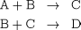

In order to introduce the various elements of the definition of the problem of dynamic optimisation, we consider the semi-batch reactor shown in the figure below. Two exothermic reactions are taking place:

where A and B are the raw materials, C the desirable product, and D the unwanted by-product.
The reactor receives two independent inputs of pure A and B, and is cooled with cooling water circulating through a coil. Starting with an empty reactor, we are free to vary the in-flows of A and B, as well as the cooling water flowrate.
For a given reactor design, our operational objective may be to determine the duration of the operation, and the time variation of the various material and energy flowrates over this duration, so as to maximise the final concentration of C. Of course, equipment design and resource availability usually impose certain limits within which our control manipulations must be maintained---for instance, there is an upper limit on the available flowrate of cooling water.
In general, the design of processes operating in the transient domain also leads to problems that are similar to operational optimisation problems, but may have additional degrees of freedom. For instance, we may wish to determine the optimal geometry of the reactor in addition to the optimal way of operating it over time.
Because of the transient nature of the underlying process, both the operational and design problems considered above are applications of dynamic optimisation1Often, the term "optimal control'' is also used, especially for problems that involve control variables but no time-invariant parameters (see also: What is the mathematical model?).
and serve to introduce some of the important features of this problem in its most basic form. Some other complications that often arise in practical applications will be introduced later.